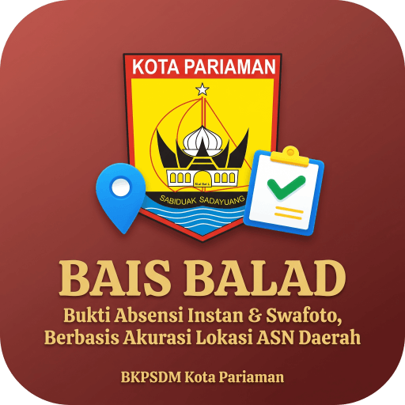

Bukti Absensi Instan & Swafoto, Berbasis Akurasi Lokasi ASN Daerah
BAIS BALAD adalah aplikasi absensi online yang dirancang khusus oleh BKPSDM Kota Pariaman untuk memudahkan Aparatur Sipil Negara (ASN) dalam mencatat kehadiran di setiap kegiatan.
Dengan aplikasi ini, Anda tidak perlu lagi antre untuk tanda tangan. Cukup pindai (scan) QR Code acara, ambil foto, dan absensi Anda langsung tercatat. Mudah, cepat, dan praktis!
Absen cepat pakai kamera HP, tinggal scan QR Code acara.
Lokasi dan foto selfie Anda memastikan absensi akurat dan sah.
Bisa dipasang di semua HP (Android & iPhone) lewat browser, tanpa download dari Play Store/App Store.
Pastikan NIP dan NIK yang Anda masukkan sudah benar dan terdaftar di data kepegawaian. Jika masih belum bisa, silakan hubungi admin BKPSDM Kota Pariaman untuk bantuan.
Ya, sangat aman. Izin kamera hanya untuk mengambil foto selfie saat absen. Izin lokasi (GPS) hanya untuk memastikan Anda berada di lokasi kegiatan. Data Anda tidak akan digunakan untuk keperluan lain.
Absensi hanya bisa dilakukan selama jadwal kegiatan berlangsung. Jika Anda terlewat, status kehadiran Anda akan tercatat sebagai 'Alpa'. Silakan hubungi panitia kegiatan atau atasan Anda untuk informasi lebih lanjut.
Cukup tekan tombol "Update Sekarang". Aplikasi akan memuat ulang secara otomatis dengan versi terbaru agar Anda selalu mendapatkan fitur dan perbaikan terkini.